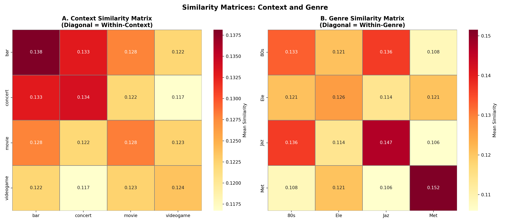

This document analyses lexical semantic similarity between music-influenced mental content (MIMC) descriptions at the aggregated document level using TF-IDF cosine similarity. Analyses are organised around three research questions:
RQ1 — Context effect: Do contextual framing cues shape MIMC similarity? Do listeners exposed to the same context produce more semantically similar thoughts than those exposed to entirely different conditions?
RQ2 — Music vs context: Does music or framing drive greater MIMC convergence? Is similarity higher when listeners share a clip (across contexts) or when they share a context label (across clips)?
RQ3 — Genre moderation: Does genre moderate the context effect? Are some genres more susceptible to contextual framing than others?
Note on method: TF-IDF is a bag-of-words method optimised for document-level analysis. Individual short MIMC texts (~10–50 words) produce extremely sparse vectors with minimal lexical overlap; similarity values at that scale would not reflect semantic relationships. This analysis therefore works exclusively with aggregated combMIMC documents (one per clip × context cell, N = 64). Individual- level analysis is handled by BERT.
This document-level lexical analysis complements the BERT semantic similarity pipeline; condition categories are identical across both methods to enable direct cross-method comparison.
Setup
Using virtual environment '/Users/hazelaileenvanderwalle/.virtualenvs/r-reticulate' ...
def sig_marker(p):"""Return significance marker string for a p-value."""if p <0.001: return"***"if p <0.01: return"**"if p <0.05: return"*"return"n.s."def welch_t(g1, g2):"""Welch's t-test with Welch-Satterthwaite degrees of freedom. Returns (t, p, df).""" n1, n2 =len(g1), len(g2) v1, v2 = g1.var(ddof=1), g2.var(ddof=1) se = np.sqrt(v1/n1 + v2/n2) t = (g1.mean() - g2.mean()) / se df = (v1/n1 + v2/n2)**2/ ((v1/n1)**2/(n1-1) + (v2/n2)**2/(n2-1)) p =2* (1- stats.t.cdf(abs(t), df))returnfloat(t), float(p), float(df)def cohens_d(g1, g2):"""Compute Cohen's d effect size.""" pooled = np.sqrt((g1.std()**2+ g2.std()**2) /2)returnfloat((g1.mean() - g2.mean()) / pooled) if pooled >0else np.nan
Data Preparation
Load Data
Load combMIMC_lvl2a.csv — Level 2a preprocessed text data of participants’ MIMC descriptions aggregated into combMIMC documents, generated using NLP-text-prep.qmd.
Unnamed: 0 ... textMIMC_lvl2a
0 0 ... kind sad melancholy happy upbeat emotionally c...
1 1 ... felt really style hawaiian hula style decor en...
2 2 ... old take place couple dancing good time bring ...
3 3 ... sit couch kid type credit old vhs endofinput p...
[4 rows x 7 columns]
TF-IDF Vectorisation
TF-IDF matrix shape: (64, 3290)
-> 64 documents x 3290 terms
Matrix density: 0.0610
Top 20 terms by mean TF-IDF:
people 0.041712
dance 0.036760
character 0.035113
something 0.034840
get 0.034086
feel 0.033809
one 0.033288
old 0.032768
start 0.032530
hear 0.032146
go 0.031478
show 0.031197
someone 0.029925
felt 0.029435
listen 0.029275
time 0.029244
friend 0.029232
watch 0.028859
lot 0.028387
stage 0.028263
Cosine Similarity Matrix
Cosine similarity matrix shape: (64, 64)
Value range: [0.0501, 1.0000]
Mean off-diagonal similarity: 0.1257
Extract Similarity Values by Condition
The pairwise matrix is unpacked into a tidy long-format DataFrame. Each row is a unique document pair annotated with condition labels.
Condition
Description
Sclip_Scontext
Same clip and same context — combined alignment
Sclip_Dcontext
Same clip, different context — isolates clip influence
Dclip_Scontext
Different clip, same context — isolates context influence
Logic: The clearest test of whether context cues do anything at all is to compare Dclip_Scontext (different music, same context label) against Dclip_Dcontext_Dgenre (everything different — the dissimilarity floor). If context drives convergence, pairs sharing a context label should be more similar than pairs sharing nothing.
An omnibus Kruskal–Wallis test across all five conditions is run first to establish that condition membership explains variation before pairwise tests are interpreted.
RQ2 — Music or Context: Which Drives Greater Convergence?
Logic: Sclip_Dcontext (same clip, different contexts) isolates the music contribution; Dclip_Scontext (different clips, same context) isolates the context contribution. Comparing these two conditions directly answers which factor produces more similar MIMC.
TF-IDF limitation — Sclip_Scontext unavailable: At the TF-IDF level, each clip × context cell is a single aggregated document. A document cannot be paired with itself, so the Sclip_Scontext condition (same clip and same context) yields zero pairs and cannot be tested here. The combined-alignment hypothesis (RQ2b) is therefore a BERT-only analysis. The placeholder section below is retained so the pipeline structure mirrors the BERT document exactly; it will produce a clear skipped notice at runtime.
Dclip_Scontext (context-driven): M = 0.1309 (N = 480)
Delta (clip − context): +0.0576
Welch's t(116.6) = 12.180, p = 0.0000 ***
Cohen's d = 1.489
-> CLIP drives greater MIMC similarity at the document level
RQ2b — Combined Advantage: Sclip_Scontext vs Single-Factor Conditions
SKIPPED in TF-IDF — BERT only. At the TF-IDF level each clip × context cell is one aggregated document, so Sclip_Scontext yields zero pairs (a document cannot be paired with itself). This sub-question is tested in the mirrored BERT pipeline, where individual responses within the same cell provide the required within-cell pairs.
Logic: Two complementary tests address this. First, framing susceptibility: for each genre, how much does sharing a context label raise similarity above the dissimilarity floor (Dclip_Scontext − Dclip_Dcontext_Dgenre)? A larger gain means context matters more for that genre. Second, within-genre clip vs context dominance: within each genre, is similarity higher when listeners share a clip (Sclip_Dcontext) or a context label (Dclip_Scontext)? If the pattern is consistent across genres, genre does not moderate the effect; if it varies, it does.
The analyses below do not map directly onto the three pre-specified research questions. They are retained as descriptive and methodological supplements that may be useful for characterising the data or for future exploratory work.
Word Clouds by Genre × Context
Word size reflects TF-IDF score; darker shading indicates a higher score. Useful for understanding the lexical character of each condition cell.
<wordcloud.wordcloud.WordCloud object at 0x16ed98340>
<matplotlib.image.AxesImage object at 0x16ed6fee0>
(np.float64(-0.5), np.float64(399.5), np.float64(299.5), np.float64(-0.5))
Text(0.5, 1.0, 'BAR')
Text(-0.1, 0.5, '80S')
<wordcloud.wordcloud.WordCloud object at 0x16ed7d040>
<matplotlib.image.AxesImage object at 0x16ece0f70>
(np.float64(-0.5), np.float64(399.5), np.float64(299.5), np.float64(-0.5))
Text(0.5, 1.0, 'CONCERT')
<wordcloud.wordcloud.WordCloud object at 0x16ed987f0>
<matplotlib.image.AxesImage object at 0x16ed7d040>
(np.float64(-0.5), np.float64(399.5), np.float64(299.5), np.float64(-0.5))
Text(0.5, 1.0, 'MOVIE')
<wordcloud.wordcloud.WordCloud object at 0x16ed980a0>
<matplotlib.image.AxesImage object at 0x16ed987f0>
(np.float64(-0.5), np.float64(399.5), np.float64(299.5), np.float64(-0.5))
Text(0.5, 1.0, 'VIDEOGAME')
<wordcloud.wordcloud.WordCloud object at 0x16eb6d1c0>
<matplotlib.image.AxesImage object at 0x16ed7dfd0>
(np.float64(-0.5), np.float64(399.5), np.float64(299.5), np.float64(-0.5))
Text(-0.1, 0.5, 'ELECTRONIC')
<wordcloud.wordcloud.WordCloud object at 0x16ed98850>
<matplotlib.image.AxesImage object at 0x16eb6d1c0>
(np.float64(-0.5), np.float64(399.5), np.float64(299.5), np.float64(-0.5))
<wordcloud.wordcloud.WordCloud object at 0x16e8ed370>
<matplotlib.image.AxesImage object at 0x16ed93340>
(np.float64(-0.5), np.float64(399.5), np.float64(299.5), np.float64(-0.5))
<wordcloud.wordcloud.WordCloud object at 0x16ed934c0>
<matplotlib.image.AxesImage object at 0x16ed93ee0>
(np.float64(-0.5), np.float64(399.5), np.float64(299.5), np.float64(-0.5))
<wordcloud.wordcloud.WordCloud object at 0x16e8eda00>
<matplotlib.image.AxesImage object at 0x16ed934c0>
(np.float64(-0.5), np.float64(399.5), np.float64(299.5), np.float64(-0.5))
Text(-0.1, 0.5, 'JAZZ')
<wordcloud.wordcloud.WordCloud object at 0x16eb6de80>
<matplotlib.image.AxesImage object at 0x16ed8f190>
(np.float64(-0.5), np.float64(399.5), np.float64(299.5), np.float64(-0.5))
<wordcloud.wordcloud.WordCloud object at 0x16e8eda00>
<matplotlib.image.AxesImage object at 0x16ed8fd00>
(np.float64(-0.5), np.float64(399.5), np.float64(299.5), np.float64(-0.5))
<wordcloud.wordcloud.WordCloud object at 0x16ed631c0>
<matplotlib.image.AxesImage object at 0x16e8eda00>
(np.float64(-0.5), np.float64(399.5), np.float64(299.5), np.float64(-0.5))
<wordcloud.wordcloud.WordCloud object at 0x16ed8f1c0>
<matplotlib.image.AxesImage object at 0x16ed8b160>
(np.float64(-0.5), np.float64(399.5), np.float64(299.5), np.float64(-0.5))
Text(-0.1, 0.5, 'METAL')
<wordcloud.wordcloud.WordCloud object at 0x16ed63190>
<matplotlib.image.AxesImage object at 0x16ed8b7c0>
(np.float64(-0.5), np.float64(399.5), np.float64(299.5), np.float64(-0.5))
<wordcloud.wordcloud.WordCloud object at 0x16ed8f3a0>
<matplotlib.image.AxesImage object at 0x16edcadc0>
(np.float64(-0.5), np.float64(399.5), np.float64(299.5), np.float64(-0.5))
<wordcloud.wordcloud.WordCloud object at 0x16ed634c0>
<matplotlib.image.AxesImage object at 0x16edca640>
(np.float64(-0.5), np.float64(399.5), np.float64(299.5), np.float64(-0.5))
Tests whether specific context labels or genres differ from each other in how much convergence they produce. Not pre-specified in the hypotheses — retained as descriptive characterisation only.
Text(0.5, 0.98, 'Similarity Matrices: Context and Genre')

Document-Level t-SNE
t-SNE projects the high-dimensional TF-IDF vectors into 2D space. Provides a visual check on whether documents with shared conditions cluster together — useful for data quality and interpretation, but not a hypothesis test.